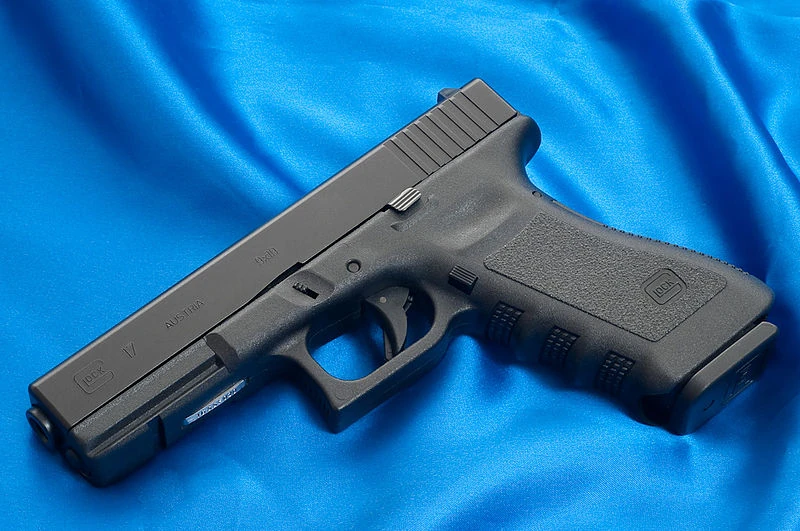

La Glock, a veces llamada por su fabricante Glock "Safe Action" Pistol (Pistola de acción segura Glock), es una Glock
serie de pistolas semiautomáticas diseñadas y producidas por el fabricante Glock Ges.m.b.H. de Deutsch-Wagram, Austria. El fundador de la compañía, el ingeniero Gaston Glock, no tenía experiencia ni en diseño ni en fabricación de armas en el momento en el que su primera pistola, laGlock 17,
estaba siendo prototipada. Glock tenía, sin embargo, una amplia experiencia con polímeros sintéticos avanzados,
conocimiento que fue fundamental para que la compañía diseñara la primera línea exitosa de pistolas con armazón de polímero. Glock introdujo la nitrocarburación ferrítica, una forma de cementación, en la industria de las armas de fuego como tratamiento anticorrosivo en las partes metálicas del arma.

A pesar de la resistencia inicial en el mercado a aceptar una «pistola de plástico» debido a preocupaciones de durabilidad y fiabilidad, las pistolas Glock se han convertido en la línea de productos más rentable de la compañía, logrando una gran cuota de mercado en cuerpos policiales, agencias de seguridad y fuerzas armadas en más de 50 países.
Se acaba de anunciar recientemente que están tomando pedidos para el RONI que puede aceptar las pistolas Glock,un kit de conversión de pistola a rifle, aceptara por ahora Glocks 17, 18, 19, 22, 23, 25, 31, 32, 34 y 35.Es plenamente ambidiestra, con culata retractil y carrillera ajustable. Tiene railes ris superiores y inferiores, y tambien tiene la posibilidad de usar silenciador.En un futuro permitira usar otros modelos de pistola.
Glock tuvo conocimiento del plan de contratación del Ejército Austríaco y en 1982 reunió a un equipo formado por los principales expertos en pistolas de Europa, procedentes de los ámbitos militar, policial y de tiro deportivo, para definir las características más deseables en una pistola de combate. En tres meses, Glock desarrolló un prototipo funcional. Esta nueva pistola hacía uso extensivo de materiales sintéticos y
de modernas tecnologías de fabricación en su diseño, convirtiéndose en un candidato muy rentable. A principios de 1982 se entregaron varias muestras de la Glock 17 9×19 mm (llamada así porque era la 17ªpatente de la compañía) para las pruebas de evaluación, y tras superar todas las exhaustivas pruebas de resistencia y abuso, Glock se convirtió en el ganador con su modelo 17.
Diseño
El modelo GLOCK 17 (G17) se caracteriza por su recámara bloqueada, retroceso corto, un cargador de mayor capacidad estándar (17 cartuchos) y una velocidad de fuego alta. Utiliza un cañón modificado del sistema de seguro Peter/Browning.
A diferencia de otras pistolas, la G17 y los demás modelos GLOCK han sido producidos con el mecanismo SAFE ACTION SYSTEM (Acción Segura), que es un mecanismo de disparo de semi - doble acción (el golpeador queda montado a medias) con un golpeador en vez del percutor y la aguja percutora.
Su estructura está rellena de polímero y plástico sofisticado. Tampoco tiene seguros manuales, sino seguros automáticos integrados que la hacen segura de portar; sin embargo a cambio de la comodidad que es no tener que quitar el seguro antes de disparar, el gatillo de la GLOCK requiere una gran presión de unos 2.5 kilos, lo cual es una presión muy grande comparada con otras armas.
Cuando se reveló que su estructura era de polímero, sorprendió ligeramente a los usuarios de armas y algunos pensaron que estaba hecha de plástico, y por lo tanto que era imperceptible para los detectores de metales.
Sin embargo, la corredera, el cañón y otras piezas son de metal y por eso el modelo es percibido por los detectores de metal. La corredera y el cañón son tratados con el Proceso QPQ Tenifer, que vuelve mucho más durable su acero.
La G17 se ha vuelto muy popular por su facilidad de manejo, larga durabilidad, precio moderado y una precisión de disparo por arriba del promedio. Es muy confiable en ambientes hostiles para las pistolas, como desiertos, selvas y regiones árticas.
La G17 ha experimentado cuatro revisiones importantes desde su aparición, así que la versión actual se llama la "cuarta generación" de GLOCK 17
La G17 es el modelo más usado por los policías, pero también es popular para uso militar, deportivo y para defensa. Más de 50 países lo utilizan.
Existen otros modelos de GLOCK que son muy similares al G17. Utilizan básicamente el mismo diseño en su estructura, pero sus pistolines, cañones y correderas pueden ser distintos porque emplean diferentes calibres y son de diferentes tamaños.
Boletín informativo
Suscríbete a nuestros boletines ahora y mantente al
día con nuevas colecciones y ofertas exclusivas.